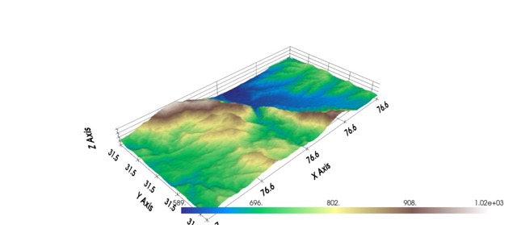

This project will explore several different methods of terrain generation. In addition to the base methods of terrain generation, Neural Style Transfer
will be utilized apply the overall style of real world terrains to our generated ones. The combination of these methods will in theory produce a more
natural looking terrain map for terrain generation.
Problem Description
Terrain generation is a concept that is widely used, especially across the gaming industry to generate the worlds you play in. You could create an
extremely realistic world by manually sculpting every terrain feature in the world, however as game worlds are expanding, this is becoming less and
less feasible. To speed this process up developers have turned to procedural generation to automatically create vast worlds. However this presents
its own set of challenges. Terrain generation algorithms often utilize noise to determine height maps of a terrain, but this often leads to unnatural
looking peaks and valleys as pure randomness does not encompass the variations in the natural world. There are many ways to solve this problem, including
erosion based algorithms, cellular automata, and various smoother noise generators like perlin and simplex. While many of these methods can work quite
well they can also be quite computationally intensive. The goal of combining these methods with something like style transfer is to deliver something
that is both realistic and computationally feasible for a game setting.
Goals and Deliverables
Planned Deliverables
Generate a heightmap from perlin noise.
Apply various style transfers to enhance the result of the original terrain
Visualize final terrain map, should look something like the following image

Terrain map visualization
The success of the final result will require a qualitative discussion of the tradeoffs between perceived realism of
the procedural terrains, with the time it took to achieve each result. The end goal is to have a realistic world that
is not prohibitively computationally expensive. There is no set balance between these two goals, however we will certainly
time and compare each method.
Aspirational Goals
There are many ways to create noise maps like gaussian, perlin and simplex noise. Each of these methods achieves a different outcome
and sometimes different methods can be combineed together to create different levels of detail at different granularities.
Schedule
Week 1: Terrain generation with perlin noise algorithm and basic visualizations with pyvista
Week 2: Apply style transfer with various real world height maps
The main inspiration and reference for our project is the above paper “Procedural terrain generation with style
transfer” by Fabio Merrizi.
For physical resources we will plan to use a physical Nvidia 1080Ti GPU if necessary for the style transfer component.
We may also leverage cloud computing resources through Google Colab.
We will plan to use Python for the code logic, and use numpy, tensorflow, and scipy. For 3D terrain visualization in
Python, pyvista for the 3D plotting and rioxarray for handling geospatial raster data will probably be useful, along
with numpy again for computing and working with data.
3D Terrain Visualization with Python